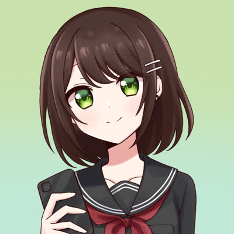

Profile

基本情報
- ハンドルネーム: 烏丸ゆい (からすま-)
- 生年月日: 2006年6月13日 (16歳)
- 職業: 高校生 (普通科)
- 所属: 開成高等学校
- 第77代黄組應援團
- 151st文化祭準備委員会 広報係
- 2023年度高2旅行委員会 総務
- アバター画像はアイコンメーカー 妙子式2 で作成したものをお借りしています。
この画像は CC ライセンスではありませんのでご注意ください。
趣味
- 土曜日の放課後は都内のいろいろな場所へ散歩に出かけています。特にお台場・豊洲などのウォーターフロントの景色が好きで，学校から4時間近く歩いて訪れたこともあります。
- 様々なジャンルの音楽を聴き漁っています。最近のマイブームは Synthwave などの Chill な電子音楽。
- 乗り鉄です。普段は関東周辺の JR・私鉄に乗ることがほとんどですが，長期休み中などに青春18きっぷを利用した遠征を企画することがあります。
各種アカウント
- E-mail: yui(at)ryoku.chat
- Keyoxide: Yui Karasuma
- Mastodon: @yui@chillout.chat
- Pleroma: @yui@pleroma.chillout.chat
- GitHub: @yui87
- Twitter: @yuicha87